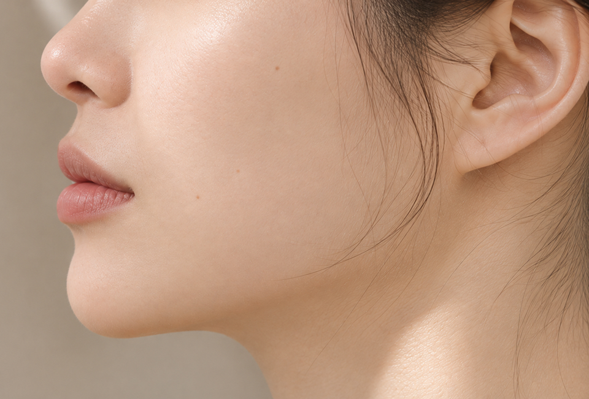
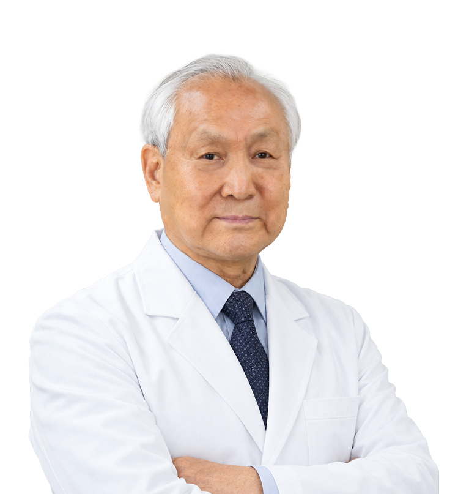

손끝으로 살피던 한 사람의 몸
이근춘 원장의 맥진과 한약 진료.
증상과 함께 생활과 몸의 상태를 살피는
제일한의원 임상의 출발점입니다.
맥진과 한약에서 출발한 제일한의원.
몸의 구조를 살피는 해부학적 시선을 통증 진료와
한방미용에도 담습니다.
The First Clinic of Korean Medicine
이근춘 원장의 맥진과 한약 진료.
증상과 함께 생활과 몸의 상태를 살피는
제일한의원 임상의 출발점입니다.
이근춘 원장에게서 이어받은 임상,
황지영 대표원장이 그 바탕 위에 근육의 구조와
몸의 움직임을 살피는 해부학적 접근을 더합니다.
통증 진료에서 쌓아온 근육과 근막에 대한 이해.
표정과 얼굴의 움직임을 살피는 한방미용으로 이어집니다.


The First Clinic of Korean Medicine
대표원장 황지영
The First Clinic of Korean Medicine
(화요일 오전 예약 진료)
명예원장 이근춘


서울 성북구 아리랑로 28 2층
주차 공간이 협소하므로
대중교통 이용을 권장드립니다.